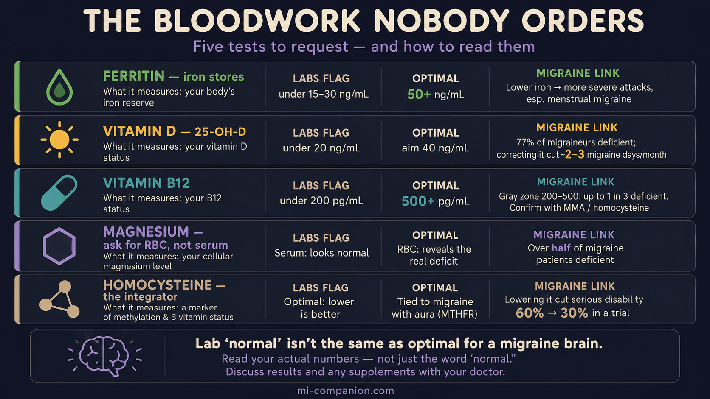

By Rustam Iuldashov
30 years lived experience with chronic migraine | Sources: 16 peer-reviewed references including Nutrients, Journal of Clinical Neurology, Neurology India, Headache, British Journal of Haematology, Neurological Research, Pain Medicine, Magnesium Research, Pharmacogenetics and Genomics, Journal of Headache and Pain | Last updated: June 2026
Important Notice: This article is for informational and educational purposes only and does not constitute medical advice. The author is not a licensed physician. Always consult your doctor before requesting tests, interpreting results, or starting, stopping, or changing any supplement or medication. For medical emergencies, call your local emergency number immediately.
Key Takeaways
- Lab “normal” isn’t the same as optimal for migraine. Reference ranges catch overt disease, not the subclinical gaps that matter to a migraine-prone brain.[8]
- Ferritin under 50 ng/mL can signal functional iron deficiency long before labs flag it at 15–30. Lower iron tracks with more severe migraine, especially menstrual migraine.[1,2,3,4]
- Vitamin D runs low in most migraine patients; correcting a deficiency cut roughly 2–3 migraine days a month in pooled trials.[5,6,7]
- B12 between 200 and 500 is a gray zone. Confirm it with methylmalonic acid or homocysteine — up to a third of “normal” results hide a real deficiency.[8,9,10]
- Ask for RBC magnesium, not serum. Serum stays normal while tissues empty; RBC reveals the deficit found in over half of migraine patients.[11,12,13]
- Homocysteine exposes hidden B-vitamin gaps and links to migraine with aura; lowering it halved disability in a trial, most of all in MTHFR carriers.[14,15,16]
Your doctor scans the printout, nods, and says the three words that end the conversation: “Everything looks normal.”
But you’re not normal. Eight migraine days a month. A fog that won’t lift. A tiredness that sleep doesn’t touch. So which is true — the paper, or the way you feel?
Usually, it’s the way you feel. The problem isn’t your blood. It’s the ruler.
Why “normal” is such a low bar
Lab reference ranges were never designed to fine-tune a migraine brain. They were drawn to catch overt disease — the moment a deficiency turns into anemia, brittle bones, or nerve damage across a whole population. Land inside the range and all you’ve proven is that you don’t have the late, unmistakable version of the problem. Whether your levels are high enough for a nervous system already primed to fire? The range has nothing to say about that.
That gap — between “not sick” and “actually well” — is where a great deal of migraine suffering hides. Five blood tests live in that gap. Here’s what the lab flags, what the migraine research suggests, and how to read your own numbers.
Test 1 — Ferritin (your iron reserves)
Ferritin measures the iron you have in storage, and it’s the earliest warning you’ll get before a deficiency hardens into anemia. Most labs stay silent until ferritin drops below 15 to 30 ng/mL.[1] Yet studies using more sensitive markers of iron metabolism place the start of functional iron deficiency far higher — around 50 ng/mL.[1,2]
For migraine, and for women especially, that difference is not academic. Iron-deficiency anemia is more common in people with migraine, and the relationship runs in one direction: the lower the stores, the harder the attacks.[3] The link is tightest in menstrual migraine, where monthly blood loss drains the tank a little more each year.[4] Iron is the raw material your brain uses to build dopamine and serotonin — the very chemistry migraine runs on. Run low, and the brain feels it.[3]
How to read it: A ferritin under 50 ng/mL is worth a conversation about iron, especially if heavy periods, fatigue, or restless legs travel alongside your migraines.
Test 2 — Vitamin D
Low vitamin D shadows migraine almost everywhere it’s measured. In one study, 77% of migraine patients were outright deficient, and nearly 95% fell short of sufficiency.[5] Pooled across studies, migraineurs carry levels several points below people without migraine, and that shortfall roughly doubled the odds of having the disease.[6]
The hopeful part: correcting it appears to matter. Combined trial data show vitamin D supplementation trimmed about two migraine days off the month against placebo,[6] and broader reviews put the figure closer to three fewer headache days — with the biggest gains in people who started out deficient.[7] The honest caveat belongs here too: the overall evidence is rated low to moderate, and topping up someone who’s already replete buys little.[7]
How to read it: Labs bless anything over 20 ng/mL as “sufficient” and 30 as “normal.” But the migraine relationship looks continuous, and many headache specialists aim higher, into the 40 ng/mL range. Below 30, you’re a strong candidate to correct it.
Test 3 — Vitamin B12
This is where the standard range stops being unhelpful and starts being misleading. U.S. labs call B12 deficient only below 200 pg/mL — a line drawn to catch the late, blood-cell stage of the problem.[8] The nervous system doesn’t wait that long. Neurological symptoms show up in people sitting at 350 to 400, which is why European and Japanese guidelines draw their line at 500.[8] Among people whose B12 reads a comfortable 200 to 500, one in four to one in three is functionally deficient anyway, betrayed by a raised methylmalonic acid.[8]
Migraine lives in this gray zone. A 2025 case-control study found migraineurs averaged 244 pg/mL against 303 in controls — and the chronic patients sat lower still, their B12 falling as their attacks worsened.[9] In another study, people in the highest B12 tier had 80% lower odds of migraine than those in the lowest.[10]
How to read it: A B12 in the low 200s to 400s isn’t a green light. It’s a yellow one. Ask for a methylmalonic acid or homocysteine test (Test 5) to see whether your cells are actually fed.
Test 4 — RBC magnesium (not serum magnesium)
This is the test most often ordered wrong.
When magnesium runs short, the body robs its own tissues to keep the blood level steady, because the heart and brain demand an unbroken supply.[11] So a standard serum magnesium test can glow normal while your cells run dry.
RBC magnesium looks inside the cell, where the truth is. Studies measuring both found migraine patients low on RBC magnesium even when their serum read fine.[11,12] By some counts, more than half of people with migraine are deficient.[13] And the treatment side is encouraging: a meta-analysis of randomized trials found magnesium — oral and intravenous — cut both the frequency and the intensity of attacks.[13]
How to read it: If your doctor offers “magnesium,” ask by name for RBC magnesium. A normal serum result does not clear you.
Test 5 — Homocysteine (the one that ties it together)
Homocysteine is the integrator. It’s an amino acid that climbs when B12, folate, or B6 fall short, and a high reading tracks with migraine — above all, migraine with aura.[14] People carrying the common MTHFR C677T gene variant clear it less efficiently, and tend to run higher.[14]
What makes this test worth ordering is the payoff. In a randomized trial, lowering homocysteine with folic acid, B6, and B12 dropped the molecule by 39% and slashed the share of patients with serious migraine disability from 60% to 30% — while the placebo group didn’t budge.[15] The carriers of the MTHFR variant gained the most.[15] Dose mattered, too: a weaker folic acid regimen moved nothing.[16]
⚠️ When to see a doctor, not a supplement aisle
These five tests are a map for a conversation with your physician — not a license to self-diagnose. Severe deficiencies can have serious underlying causes that need investigating, and a very low B12 paired with numbness, balance trouble, or memory changes is a medical problem, not a wellness tweak. Seek emergency care — not bloodwork — for:
- A new, sudden, or “worst headache of my life” with thunderclap onset
- Headache with fever, stiff neck, confusion, or rash
- Headache with new neurological symptoms — weakness on one side, slurred speech, vision loss, loss of balance, or seizure
- Headache after a head injury, especially with vomiting or drowsiness
And never start high-dose supplements to “fix a number” on your own. Several of the nutrients here carry real upper limits and can interact with medications or mask other problems.
Lab “normal” was built to catch disease, not to optimize a migraine brain. The five gaps above are common, fixable, and invisible to a result that simply reads “normal.”
How to actually get these ordered
Walk in with a short, specific list, read your results against the optimal targets here rather than the lab flags alone, and leave the supplementing to a plan you build with your doctor.
🗺️ How to Ask for These Five Tests
“I’d like to check ferritin, 25-hydroxyvitamin D, vitamin B12, RBC magnesium, and homocysteine — I’m working on my migraines and want to rule out treatable deficiencies.”
- Ask for the actual numbers, not a verdict of “normal.” You can’t read what you can’t see.
- Read them against optimal targets — ferritin 50+, vitamin D toward 40, B12 500+, RBC (not serum) magnesium, and a low homocysteine — not just the lab’s deficiency flags.
- Build the supplement plan with your doctor. More is not better, and a few of these carry real upper limits.

The goal was never a perfect panel. It’s to find the quiet, fixable gaps that a “normal” result so politely hides.
Key Takeaways
- Lab “normal” isn’t the same as optimal for migraine. Reference ranges catch overt disease, not the subclinical gaps that matter to a migraine-prone brain.
- Ferritin under 50 ng/mL can signal functional iron deficiency long before labs flag it at 15–30. Lower iron tracks with more severe migraine, especially menstrual migraine.
- Vitamin D runs low in most migraine patients; correcting a deficiency cut roughly 2–3 migraine days a month in pooled trials.
- B12 between 200 and 500 is a gray zone. Confirm it with methylmalonic acid or homocysteine — up to a third of “normal” results hide a real deficiency.
- Ask for RBC magnesium, not serum. Serum stays normal while tissues empty; RBC reveals the deficit found in over half of migraine patients.
- Homocysteine exposes hidden B-vitamin gaps and links to migraine with aura; lowering it halved disability in a trial, most of all in MTHFR carriers.
⚕️ Full Medical Disclaimer
This article is written by Rustam Iuldashov, a patient with 30 years of personal experience living with migraine. It is intended for educational and informational purposes only and does not constitute medical advice. The author is not a licensed physician.
Blood test reference ranges and “optimal” targets vary between laboratories, countries, and individuals, and a result should always be interpreted in the context of your full health picture by a clinician. The deficiency thresholds discussed here describe patterns seen in research and do not mean any single number diagnoses or rules out a condition on its own.
Supplements — including iron, vitamin D, B12, and magnesium — can interact with medications, carry upper safe limits, and may be harmful in excess or in certain medical conditions; some can mask or worsen underlying problems if taken without testing and supervision. Never self-treat a suspected deficiency. Do not start, stop, or change any supplement or medication without consulting your doctor. If you experience a new, sudden, or severe headache, or any headache with the neurological symptoms listed in the emergency box above, seek medical care without delay.
References & Further Reading
- Tarancon-Diez L, Genebat M, Roman-Enry M, et al. “Threshold ferritin concentrations reflecting early iron deficiency based on hepcidin and soluble transferrin receptor serum levels.” Nutrients 14(22):4739 (2022). doi:10.3390/nu14224739. Cross-sectional study. n=228.
- Mei Z, Addo OY, Jefferds ME, et al. “Physiologically based serum ferritin thresholds for iron deficiency (NHANES).” American Journal of Clinical Nutrition (2023). doi:10.1016/j.ajcnut.2023.07.005. Cross-sectional (NHANES) analysis. n>7,000.
- Al-Qassab ZM, Ahmed O, Kannan V, et al. “Iron deficiency anemia and migraine: prevalence, pathophysiology, and therapeutic potential.” Cureus 16(9):e69652 (2024). doi:10.7759/cureus.69652. Literature review.
- Gür-Özmen S, Karahan-Özcan R. “Iron deficiency anemia is associated with menstrual migraine: a case–control study.” Pain Medicine 17(3):596–605 (2016). doi:10.1093/pm/pnv029. Case-control study.
- Song TJ, Chu MK, Sohn JH, et al. “Effect of vitamin D deficiency on the frequency of headaches in migraine.” Journal of Clinical Neurology 14(3):366–373 (2018). doi:10.3988/jcn.2018.14.3.366. Cross-sectional study. n=157.
- Nowaczewska M, Słomka A, Pawlak-Osińska K, et al. “Effects of vitamin D on migraine: a meta-analysis.” Neurology India 71(4):655–661 (2023). doi:10.4103/0028-3886.383862. Meta-analysis (10 observational + 2 RCT).
- Vitamin D deficiency and supplementation in migraine: a scoping review. PMC 12962385 (2025). ncbi.nlm.nih.gov. Scoping review (14 observational, 9 RCT, 7 systematic reviews).
- Devalia V, Hamilton MS, Molloy AM; British Committee for Standards in Haematology. “Guidelines for the diagnosis and treatment of cobalamin and folate disorders.” British Journal of Haematology 166(4):496–513 (2014). doi:10.1111/bjh.12959. Clinical guideline.
- Hamed SA, Hamed EA, Kandil MR, et al. “The correlation between vitamin B12 serum levels and migraine: a case-control study.” Neurological Research 47(3) (2025). doi:10.1080/01616412.2025.2462735. Case-control study.
- Togha M, Razeghi Jahromi S, Ghorbani Z, et al. “Serum vitamin B12 and methylmalonic acid status in migraineurs: a case-control study.” Headache 59(9):1492–1503 (2019). doi:10.1111/head.13618. Case-control study. n=140.
- Thomas J, Thomas E, Tomb E. “Serum and erythrocyte magnesium concentrations and migraine.” Magnesium Research 5(2):127–130 (1992). PMID:1390006. Comparative study. n=134.
- Soriani S, Arnaldi C, De Carlo L, et al. “Serum and red blood cell magnesium levels in juvenile migraine patients.” Headache 35(1):14–16 (1995). PMID:7868328. Comparative cross-sectional study.
- Dominguez LJ, Veronese N, Sabico S, et al. “Magnesium and migraine.” Nutrients 17(4):725 (2025). doi:10.3390/nu17040725. Review incl. RCT meta-analysis (IV n=948, oral n=789).
- Shaik MM, Gan SH. “Vitamin supplementation as possible prophylactic treatment against migraine with aura and menstrual migraine.” BioMed Research International 2015:469529 (2015). doi:10.1155/2015/469529. Review.
- Lea R, Colson N, Quinlan S, et al. “The effects of vitamin supplementation and MTHFR (C677T) genotype on homocysteine-lowering and migraine disability.” Pharmacogenetics and Genomics 19(6):422–428 (2009). doi:10.1097/FPC.0b013e32832af5a3. Randomized controlled trial. n=52.
- Menon S, Lea RA, Roy B, et al. “The effect of 1 mg folic acid supplementation on clinical outcomes in female migraine with aura patients.” Journal of Headache and Pain 16:62 (2015). doi:10.1186/s10194-015-0524-6. Randomized controlled trial. n=300.

How We Create Content
- Peer-reviewed sources only. Nutrients, American Journal of Clinical Nutrition, Journal of Clinical Neurology, Neurology India, Headache, British Journal of Haematology, Neurological Research, Pain Medicine, Magnesium Research, Pharmacogenetics and Genomics, Journal of Headache and Pain, and the BSH cobalamin/folate guideline.
- Source transparency. Every clinical claim carries a numbered citation. Study design and sample size noted. DOI links provided.
- Experience + Science. 30 years personal migraine experience combined with peer-reviewed evidence.
- Honest about limits. Where evidence is rated low or effects are modest, we say so — no overstatement.
- No conflicts of interest. No funding from any supplement, laboratory, or pharmaceutical company.
Catch the Patterns Your Bloodwork Can’t
Migraine Companion helps you log every attack — timing, severity, symptoms, what you tried, and what worked — so when you sit down with your doctor, you bring evidence, not guesses. Track how you feel as you correct a deficiency, and see whether your numbers and your migraines move together.
Last reviewed: June 2026
Next scheduled review: December 2026